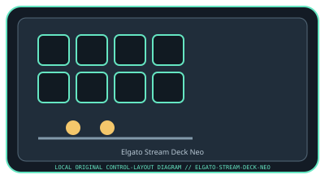

[ SPECIALIZED INPUT CONTROLLERS // IDENTIFIED COMPONENT ]
Elgato Stream Deck Neo
USB macro controller with eight customizable LCD keys, touch points, and an information bar.

MODEL IDENTIFICATION: Stream Deck Neo (manufacturer model name; verify the regional product label). Confirm the full label, revision, region, included accessories, and software generation against the physical unit before use.
Model specifications
| Catalog leaf | Specialized input controllers |
|---|---|
| Exact model / identifier | Stream Deck Neo (manufacturer model name; verify the regional product label) |
| Control inputs / sensors | Eight customizable LCD keys plus two touch-sensitive page-navigation points and a status/info bar. LCD key presses and touch points are discrete interface inputs; there are no analog sensors requiring calibration. |
| Connection / protocol | USB-C wired connection to the host; USB HID/control communication and bus power. It is not an audio device. The supported USB cable/adapter and host port depend on the computer. |
| Driver, software, and host compatibility | Elgato Stream Deck software configures profiles, actions, and plug-ins. Manufacturer support lists current Windows and macOS requirements; feature availability depends on software version, plug-ins, and connected services. |
| Setup / calibration | Install the current Stream Deck application, connect directly to a supported USB port, and configure profiles/actions in the app. Test each LCD key and both page-touch points, then confirm profile behavior after restart. No sensor calibration is provided; firmware/app updates should use Elgato’s supported updater. |
Safety and preservation
Keep the LCD surface and USB-C connector dry; do not use solvents or press the keys with sharp objects. Provide ventilation and cable slack, and disconnect before cleaning. Actions may trigger external services or system commands, so review profile assignments before use.
Record observed condition, host OS, application/driver version, firmware, accessories, and test conditions separately from manufacturer claims.
Primary manufacturer sources
- Elgato Stream Deck Neo product pageManufacturer specifications, key count, and product features.
- Elgato Stream Deck Neo technical specificationsManufacturer application downloads, setup instructions, and supported-host information.
Specifications and software support can change by revision and host OS. Verify the exact unit and applicable manual before service or deployment.